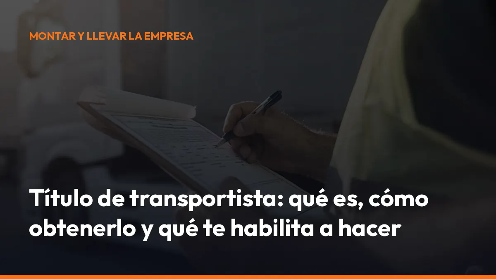

Título de transportista: qué es, cómo obtenerlo y qué te habilita a hacer

No son lo mismo.
El título acredita tu competencia profesional. La tarjeta es la autorización administrativa que permite a tu empresa o actividad prestar determinados servicios de transporte por carretera.
En este artículo verás qué necesitas, cómo se obtiene, qué materias entran en el examen y qué relación existe con la honorabilidad, el gestor de transporte y la autorización de transporte.
¿Qué es el título de transportista?
El llamado título de transportista es el nombre habitual del certificado de competencia profesional para el transporte por carretera.
Este certificado demuestra que tienes los conocimientos necesarios para dirigir una actividad de transporte de mercancías o viajeros.
La competencia profesional es uno de los requisitos exigidos para acceder a la profesión de transportista, junto con:
- Honorabilidad.
- Capacidad económica.
- Establecimiento efectivo en España.
- Cumplimiento de las obligaciones fiscales y sociales.
Estos requisitos proceden, entre otras normas, del Reglamento (CE) 1071/2009, que establece las condiciones comunes para ejercer la profesión de transportista por carretera en la Unión Europea.
¿Qué consigues con este título?
Con el certificado de competencia profesional puedes:
- Acreditar la capacitación necesaria para ejercer como transportista.
- Ser designado como gestor de transporte de una empresa.
- Cumplir el requisito de competencia profesional para solicitar una autorización.
- Gestionar legalmente la actividad de transporte de mercancías o viajeros.
- Optar a la tarjeta de transporte, siempre que cumplas también el resto de requisitos.
El título no sustituye a la autorización. Es una parte esencial del expediente, pero tendrás que acreditar también la capacidad económica, la honorabilidad y las demás condiciones exigidas.
Primero acredita tu competencia. Después solicita la tarjeta de transporte.
¿Quién necesita el título de transportista?
Necesitas acreditar la competencia profesional cuando quieras ejercer una actividad de transporte público por carretera incluida en el ámbito de autorización administrativa.
En transporte público de mercancías, el requisito resulta especialmente relevante en estos casos:
- Vehículos de más de 3.500 kg de MMA: necesitas cumplir los requisitos de acceso a la profesión y disponer de la autorización correspondiente.
- Transporte internacional con vehículos de más de 2.500 kg de MMA: también pueden aplicarse las exigencias de acceso al mercado internacional.
- Empresas de transporte: deben contar con una persona que aporte la competencia profesional y dirija efectivamente la actividad.
En determinados transportes ligeros nacionales pueden existir reglas específicas según la masa máxima autorizada, el tipo de servicio y la autorización aplicable. Por eso, no confundas conducir una furgoneta con ejercer legalmente como empresa de transporte público.
Además, el título no es lo mismo que:
- El permiso de conducir.
- El CAP.
- La tarjeta de conductor del tacógrafo.
- La tarjeta de transporte.
Cada documento cumple una función diferente. El permiso te permite conducir. El CAP acredita tu cualificación como conductor profesional. El título acredita la competencia para dirigir la actividad empresarial de transporte.
Título de transportista y tarjeta de transporte: ¿cuál es la difer-
encia?
La diferencia es sencilla:
Documento Qué acredita Para qué sirve
Título de transCompetencia profesional Demuestra que puedes dirigir la actividad de portista transporte
Tarjeta de Autorización administrativa Permite prestar servicios de transporte con vetransporte hículos autorizados
CAP Cualificación profesional Permite conducir profesionalmente determina-
del conductor dos vehículos
Permiso de Aptitud para conducir Te habilita para conducir una categoría concconducir reta
Para solicitar una tarjeta de transporte, la empresa debe cumplir las condiciones exigidas por la Administración. Entre ellas se encuentra la competencia profesional, que puede aportarse de dos formas:
- Con tu propio certificado, si has superado el examen o tienes la titulación válida.
- Mediante un gestor de transporte, contratado o vinculado legalmente a la empresa.
El gestor no es una figura decorativa. Debe dirigir de forma efectiva y permanente las actividades de transporte. Entre sus funciones pueden estar la gestión del mantenimiento, la revisión de contratos y documentos, la organización de cargas y vehículos, la contabilidad básica y la comprobación de los procedimientos de seguridad.
Consulta los requisitos oficiales del gestor de transporte antes de presentar tu solicitud.
Cómo obtener el título de transportista
Tienes dos vías principales para acreditar la competencia profesional.
1. Superar el examen oficial
La opción más habitual es presentarte al examen convocado por la comunidad autónoma donde tengas tu residencia habitual o cumplas las condiciones administrativas de la convocatoria.
Como norma general, se exige disponer de alguna de estas titulaciones:
- Bachillerato o equivalente.
- Título de Técnico, de Formación Profesional de grado medio.
- Título de Técnico Superior, de Formación Profesional de grado superior.
- Título universitario de grado o posgrado.
También tendrás que:
- Presentar la solicitud dentro del plazo.
- Abonar la tasa correspondiente.
- Acreditar tu residencia o empadronamiento según la convocatoria.
- Utilizar certificado digital, DNI electrónico u otro sistema de identificación si el trámite es telemático.
Las condiciones concretas pueden cambiar entre comunidades autónomas. Revisa siempre la convocatoria vigente de tu territorio. Por ejemplo, algunas administraciones publican la información a través de sus portales de trámites de transporte, como la Generalitat de Catalunya o la Generalitat Valenciana.
2. Acreditar una titulación específica
El título de Técnico Superior en Transporte y Logística puede permitir obtener directamente el certificado de competencia profesional, sin realizar el examen específico, de acuerdo con las condiciones administrativas aplicables.
No des por válido cualquier curso privado. La formación debe corresponder a una titulación o vía reconocida oficialmente.
Antes de matricularte, comprueba qué documento recibirás y si sirve para acreditar la competencia profesional.
¿Cómo es el examen?
El examen de competencia profesional se organiza en dos pruebas:
- Prueba tipo test: preguntas con varias respuestas posibles.
- Prueba práctica: supuestos relacionados con la gestión real de una empresa de transporte.
El formato habitual incluye:
- Hasta 200 preguntas tipo test en la primera parte.
- Supuestos prácticos en la segunda parte.
- Una duración aproximada de 2 horas por prueba.
- Penalización por respuestas incorrectas, según la convocatoria.
- Un mínimo de puntuación en cada prueba y una puntuación global para superar el examen.
Los criterios exactos pueden estar desarrollados en la convocatoria autonómica. No estudies únicamente para memorizar preguntas. El objetivo es demostrar que puedes gestionar una empresa, calcular costes, interpretar documentos y tomar decisiones correctas.
Materias del título de capacitación profesional
El programa oficial cubre las áreas que necesitarás manejar en el día a día de una empresa de transporte:
- Derecho civil: contratos, responsabilidades, reclamaciones y daños en la mercancía.
- Derecho mercantil: empresas, sociedades, obligaciones y funcionamiento empresarial.
- Derecho social: contratos laborales, Seguridad Social, jornada y descansos.
- Derecho fiscal: IVA, impuestos, obligaciones tributarias e impuestos vinculados a los vehículos.
- Gestión financiera: costes fijos y variables, presupuestos, rentabilidad, seguros y tesorería.
- Acceso al mercado: autorizaciones, tarjetas de transporte, licencias, documentos y cabotaje.
- Explotación técnica: pesos, dimensiones, mantenimiento, carga, estiba y mercancías peligrosas.
- Seguridad vial: conductores, vehículos, prevención de accidentes y procedimientos de seguridad.
Estas materias no son teoría aislada. Te ayudan a evitar errores que pueden provocar sanciones, pérdida de rentabilidad, inmovilizaciones o problemas con la autorización.
Por ejemplo, conocer los costes por kilómetro te permite calcular una tarifa rentable. Dominar la documentación evita que una inspección paralice tu servicio. Entender la estiba reduce el riesgo de daños y reclamaciones.
Honorabilidad: el requisito que debes proteger
La competencia profesional no es suficiente si pierdes la honorabilidad.
La honorabilidad se relaciona con el historial de la empresa, del titular y del gestor de transporte. Determinadas condenas o infracciones graves pueden afectar a la capacidad para ejercer la actividad.
Entre las áreas que pueden influir se encuentran:
- Tiempos de conducción y descanso.
- Uso del tacógrafo.
- Seguridad vial.
- Transporte de mercancías peligrosas.
- Exceso de peso.
- Acceso al mercado.
- Permisos de conducción.
- Condiciones laborales.
- Inspecciones técnicas.
- Transporte internacional.
Una infracción grave no solo puede suponer una multa. En determinados casos puede afectar a la autorización, al gestor de transporte o a la continuidad de la empresa.
Por eso debes trabajar con procedimientos claros y conservar correctamente los documentos de cada operación. Con Mi Carga puedes generar y guardar documentación digital de transporte desde el móvil, incluso con modo sin conexión, y mantener la trazabilidad de tus operaciones.
¿El título de transportista caduca?
El certificado de competencia profesional no funciona como el CAP, que exige renovaciones periódicas. En general, el título no tiene una fecha de caducidad ordinaria.
Sin embargo, debes mantener el resto de condiciones para ejercer:
- Conservar la honorabilidad.
- Cumplir la capacidad económica.
- Mantener la empresa correctamente establecida.
- Contar con un gestor de transporte válido.
- Cumplir las obligaciones fiscales y sociales.
- Mantener activa y correcta la autorización de transporte.
Además, la normativa europea contempla la actualización de conocimientos en determinados supuestos, especialmente cuando una persona titular del certificado no ha dirigido de forma permanente una empresa durante un periodo prolongado.
No basta con aprobar una vez. Debes seguir cumpliendo siempre.
Checklist para solicitar tu tarjeta de transporte
Antes de iniciar la actividad, revisa estos puntos:
- Competencia profesional: tienes el título o cuentas con un gestor de transporte.
- Honorabilidad: no existe una circunstancia que impida ejercer.
- Capacidad económica: puedes demostrar los recursos exigidos.
- Establecimiento: dispones de una base y documentación accesible para la Administración.
- Vehículo: cumple las condiciones técnicas, fiscales y administrativas.
- Hacienda: estás dado de alta en la actividad correspondiente.
- Seguridad Social: cumples tus obligaciones como autónomo o empresa.
- Documentación: puedes aportar contratos, certificados y justificantes.
- Autorización: has solicitado la tarjeta adecuada para tu actividad.
No empieces a transportar por cuenta ajena sin comprobar antes tu situación administrativa. Una operación aparentemente sencilla puede convertirse en una sanción si no tienes la autorización correcta.
Empieza con la documentación bajo control
Obtener el título de transportista es el primer paso para demostrar que puedes dirigir una actividad profesional. La tarjeta de transporte es el siguiente paso para operar legalmente con los vehículos y servicios que correspondan.
Prepárate para el examen. Revisa tu comunidad autónoma. Acredita la competencia profesional. Comprueba la honorabilidad y solicita la autorización adecuada.
Después, mantén cada operación documentada desde el móvil.
Con Mi Carga puedes emitir documentos de transporte de forma rápida, guardarlos digitalmente y acceder a ellos cuando los necesites en carretera, en una inspección o desde tu oficina.
10 portes de prueba. Portes ilimitados en la suscripción. Desde 10 € al mes + IVA. Sin permanencia y sin pasar por una tienda.
Empieza ahora con Mi Carga o escríbenos por WhatsApp y te ayudamos a ponerlo en marcha.
DeCA, carta de porte y ADR, en PDF, con QR y archivo automático en la nube.
Empezar con 10 documentos gratisArtículo informativo. Consulta siempre el caso concreto de tu operación. ¿Dudas? Escríbenos.